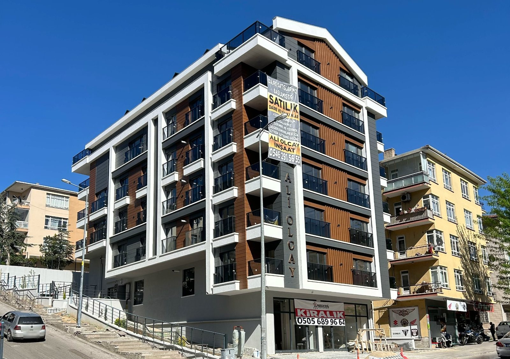
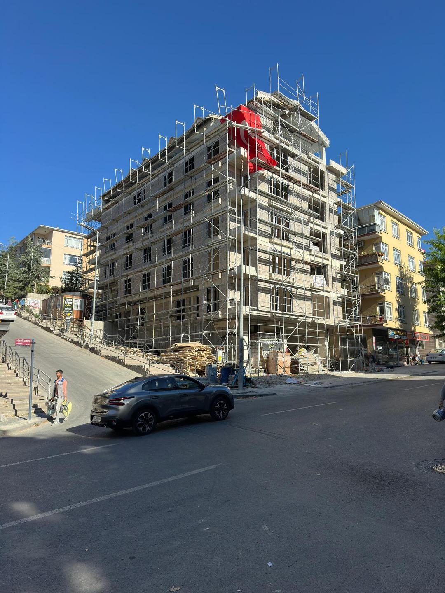
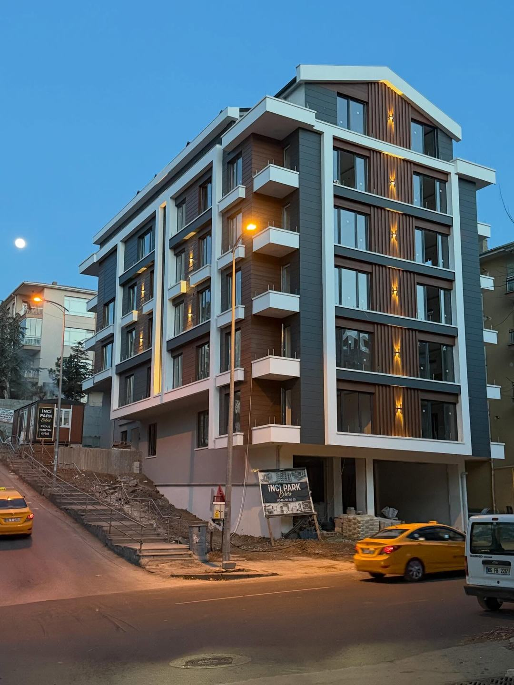

Ali Olcay İnşaat · Ankara
Hayal edin,tasarlayalım.
Ankara'da konut ve kentsel dönüşüm projeleri yapıyoruz.
Hakkımızda
Güvenle kurar, sağlam teslim ederiz.
Ali Olcay İnşaat, Ankara'da konut ve kentsel dönüşüm projeleri yapan bir müteahhitlik firmasıdır.
Söz verdiğimiz planı, söz verdiğimiz kalitede teslim etmeyi esas alırız. Her projede çağdaş bir tasarımı sağlam bir yapıyla bir araya getiririz. Bizim için iş bina yapmakla bitmez; o binada yaşayacak insanların geleceğini de düşünürüz.
- Güven
- Müşteri memnuniyeti, verdiğimiz her kararın ölçüsüdür.
- Tasarım
- Çağdaş mimariyi günlük hayatla birlikte düşünürüz.
- Dayanıklılık
- Yapıyı uzun yıllar ayakta kalacak biçimde kurarız.
Hizmetler
Ne yapıyoruz.
Binanızın tespitinden anahtar teslimine kadar işin tamamını üstleniriz.
- Kentsel dönüşüm
- Riskli yapı tespitinden kat malikleriyle anlaşmaya, yıkımdan teslime kadar süreci yürütürüz.
- Konut yapımı
- Çağdaş tasarımlı, sağlam konut ve dükkânlı yapılar inşa ederiz.
- Proje ve ruhsat
- Mimari ve statik projeyi hazırlatır, ruhsat işlerini takip ederiz.
- Satış
- Tamamladığımız yapılardaki daire ve dükkânları doğrudan satarız.

Yeni projemiz
Yeni yapımız tamamlandı.
Daire ve dükkân satışları başladı.
Ahşap kaplamalı cephe, cam korkuluklu balkonlar, zemin katta dükkânlar. Konum, daire tipleri ve teslim koşulları için bize yazın.
- Şehir
- Ankara
- Durum
- Tamamlandı
- Satışta
- Daireler ve zemin kat dükkânları
Çizimden yapıya
Kâğıttaki çizgiden teslim edilen binaya.
Her yapı bir çizimle başlar. Yeni yapımızın cephesi önce kâğıtta, sonra sokakta.
İskeleden teslime.
Aynı bina, inşaat sırasında ve tamamlandığında.


Projelerimiz
Tamamladığımız işler.
Teslim ettiğimiz yapılardan, dışarıdan ve içeriden kareler.
Süreç
Kentsel dönüşüm, dört adımda.
Her binanın süreci farklıdır. Genel sıra aşağıdaki gibidir; sizin yapınız için yol haritasını birlikte çıkarırız.
Tespit
Yapının riskli olup olmadığı, yetkili bir kuruluşun raporuyla belirlenir.
Anlaşma
Kat malikleriyle koşullar konuşulur, yeni yapının projesi netleştirilir.
Yapım
Eski yapı yıkılır, ruhsatı alınan proje uygulanır.
Teslim
Daireler, anlaşmada yazan koşullarla sahiplerine teslim edilir.
Sık sorulanlar
Merak edilenler.
Kentsel dönüşüme karar vermeden önce en çok sorulanlar. Cevabını bulamadığınızı bize yazın.
Binamın riskli olup olmadığını nasıl öğrenirim?
Bakanlığın lisans verdiği bir kuruluşa riskli yapı tespiti yaptırılır. Başvuruyu kat maliklerinden biri yapabilir; rapor çıktıktan sonra süreç resmî olarak başlar.
Masrafı kim karşılar?
Çoğu binada kat karşılığı anlaşma yapılır: malikler arsa paylarını verir, yapım bizden olur, yeni daireler anlaşmadaki orana göre paylaşılır. Oranlar her bina için ayrı konuşulur.
Süreç ne kadar sürer?
Binanın büyüklüğüne, maliklerin anlaşmasına ve ruhsat süresine göre değişir. Sizin binanızın takvimini ilk görüşmede birlikte çıkarırız.
İnşaat sürerken nerede oturacağız?
Riskli yapı kararı alınan binalarda maliklerin ve kiracıların devletin kira yardımına başvurma hakkı vardır. Bunun dışında bir destek olacaksa anlaşmaya yazılır.
Hangi semtlerde çalışıyorsunuz?
Ankara'da çalışıyoruz. Binanızın adresini yazın, yerinde bakalım.
Instagram'da son paylaşımlar.
Instagram'da takip edinİletişim
Bize yazın.
Projenizi ya da binanızı anlatın, birlikte bakalım.
- Telefon
- 0546 291 56 55
- E-posta
- aliolcay5655@gmail.com
- @aliolcayinsaat